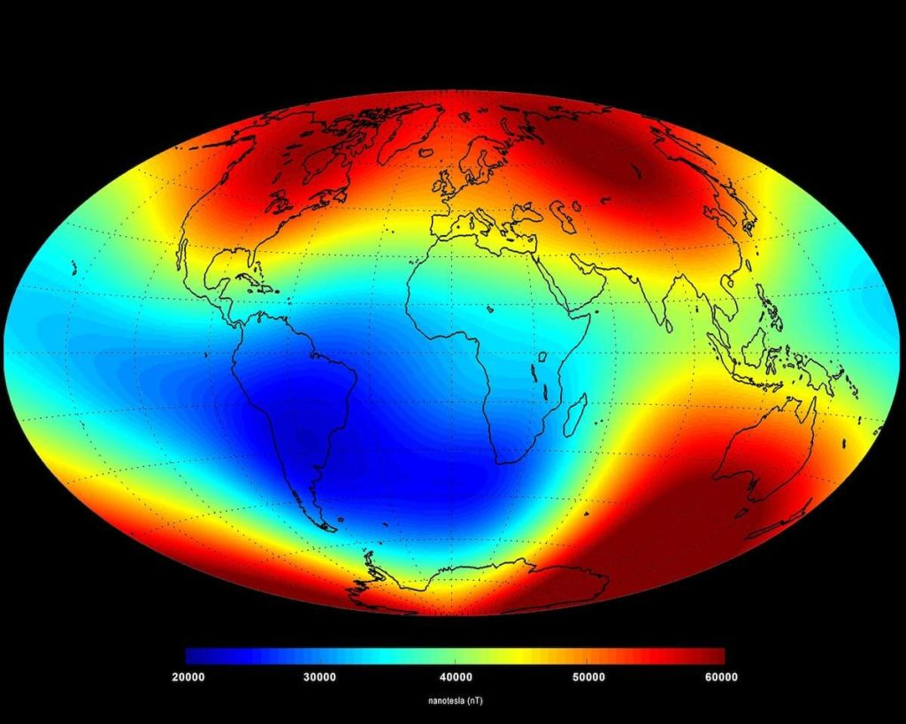

ဒီလို သံလိုက်ဝင်ရိုး ပြောင်းပြန် ဖြစ်တဲ့ ဖြစ်စဉ်ဟာ လာမယ့် နှစ်တစ်သန်း (သို့) နှစ်တစ်ထောင်လောက် အတွင်းမှ ကြုံရမယ့် ဖြစ်စဉ် မဟုတ်ဘူးလို့လဲ ပညာရှင် တွေက ခန့်မှန်း ကြပါတယ်။ ပညာရှင် အများစု ကတော့ ဒီလို ဝင်ရိုး ပြောင်းပြန် ပြောင်းတဲ့ ဖြစ်စဉ်ကို လာမယ့် နှစ် ရာဂဏန်း အတွင်း တွေ့ကြုံ ကြရ လိမ့်မယ်လို့ ယူဆ ကြပါတယ်။
အချို့သော ပညာရှင် တွေက ဒီလို သံလိုက်ဝင်ရိုး ပြောင်းပြန်ဖြစ်တဲ့ ဖြစ်စဉ်ဟာ ကမ္ဘာ့ လူသားတွေ အတွက် ကြီးမားတဲ့ ဆိုးကြိုးတွေ ဖြစ်ပေါ် စေနိုင်မယ်လို့ ယူဆ ကြပါတယ်။
ပညာရှင် တွေရဲ့ တိုင်းတာမှုတွေ အရ ကမ္ဘာ့ သံလိုက်စက်ကွင်းရဲ့ အားဟာ လွန်ခဲ့တဲ့ နှစ် ၃,၀၀၀ ခန့်အတွင်း တဖြည်းဖြည်း အားနည်း လာနေ ခဲ့တယ်လို့ ဆိုပါတယ်။
ဥရောပ သမဂ္ဂ ရဲ့ European Centre for Research and Teaching of Environmental Geosciences (CEREGE) ဌာနက သုတေသီ တစ်ဦးဖြစ်သူ နီကိုးလတ်စ် သူဗာနီ (Dr Nicolas Thouveny) က “ဒီနှုန်းအတိုင်းတာ ဆက်ပြီး အားနည်းသွားမယ် ဆိုရင် နောက်လာမယ့် နှစ် တစ်ထောင် အတွင်းမှာ ကျွန်တော်တို့ အတွက် အရေးပါတဲ့ အချိန်ကာလ တစ်ခုကို ရောက်လာလိမ့်မယ်” လို့ ရှင်းပြပါတယ်။
ဒေါက်တာ သူဗာနီ ဟာ ဥရောပ သမဂ္ဂ က ဦးစီးပြီး ထိပ်တန်း ပညာရှင်တွေ ပါဝင်တဲ့ EDIFICE သုတေသန စီမံကိန်းရဲ့ အဓိက သုတေသီ တစ်ဦး ဖြစ်ပါတယ်။ ဒီ စီမံကိန်းကို ၂၀၁၄ ခုနှစ် ကတဲက စတင်ခဲ့တာ ဖြစ်ပြီး ကမ္ဘာ့ သံလိုက်စက်ကွင်း ရဲ့ သမိုင်း ဖြစ်စဉ်ကို လေ့လာတဲ့ စီမံကိန်း ဖြစ်ပါတယ်။ ဒီ သုတေသန စီမံကိန်းဟာ အရင် အတိတ် ကာလတွေက ကမ္ဘာ့ သံလိုက်စက်ကွင်း ပြောင်းပြန်လည် ခဲ့တဲ့ အချိန်ကာလ နဲ့ ဖြစ်စဉ် တွေကိုလဲ ရှာဖွေ လေ့လာ ခဲ့ကြပါတယ်။
ကမ္ဘာ့ သံလိုက်စက်ကွင်းဟာ ကမ္ဘာ့ အတွင်းပိုင်းက အရည်ပျော် နေတဲ့ သံရည်ပူတွေ လည်ပတ် စီးဆင်းရာက ဖြစ်ပေါ်လာတာ ဖြစ်ပါတယ်။ ဒီ သံရည်ပူတွေ စီးဆင်းမှု အပြောင်းအလဲပေါ် မူတည်ပြီး သံလိုက်စက်ကွင်းရဲ့ ဝင်ရိုးစွန်း ဟာလဲ မကြာခန ပြောင်းလဲပါတယ်။ ကမ္ဘာ့ သမိုင်း တလျှောက်မှာ အကြိမ်ရေ များစွာ သံလိုက် စက်ကွင်း ပြောင်းပြန်လည်မှု ဖြစ်စဉ်တွေ ဖြစ်ခဲ့ပြီး ဖြစ်ပါတယ်။
ပညာရှင် တွေရဲ့ လေ့လာမှု အရ လွန်ခဲ့တဲ့ နှစ်သန်း ၂၀ ခန့် ကာလ အတွင်းမှာတင် ကမ္ဘာ့ ဝင်ရိုး ပြောင်းပြန် လည်မှု အကြိမ် ၁၀၀ ခန့်ထိ ဖြစ်ပျက်ခဲ့တယ်လို့ သိရပါတယ်။ ဒီလို တောင်မြောက် ပြောင်းလဲမှု ဖြစ်စဉ်တိုင်းမှာ အပြည့်အဝ ဝင်ရိုးပြောင်းပြန်ဖြစ်ဖို့ ကြာချိန်ဟာ အကြမ်းဖျင်း အားဖြင့် နှစ် ၁၀၀၀ ခန့် အချိန် ကြာမြင့်ခဲ့တယ်လို့လဲ သိရပါတယ်။
ဒီလို နှစ် ၁၀၀၀ ခန့် ကြာမြင့်တဲ့ သံလိုက်ဝင်ရိုး ပြောင်းပြန်လည်မှု ဖြစ်စဉ်တွေကြောင့် ကမ္ဘာ့ ကျောက်လွှာတွေ ထဲမှာ သံလိုက် ဓါတ်ပြောင်းလဲမှု အထောက်အထား အကြွင်းအကျန်တွေ ကျန်ရစ် ခဲ့ကြပါတယ်။ ဒီတော့ ကမ္ဘာ့ ကျောက်လွှာတွေကို တူးဖော် ကြည့်ခြင်း အားဖြင့် အရင် အတိတ်က သံလိက်ဝင်ရိုး ပြောင်းပြန်ဖြစ်မှု ဖြစ်စဉ်တွေ ဘယ်အချိန် တွေတုန်းက ဖြစ်ပျက်ခဲ့လဲ ဆိုတာကို ပြန်ပြောင်း လေ့လာ နိုင်ကြပါတယ်။
ဒီလို ကျောက်နမူနာ ရဖို့ အများအား ဖြင့်တော့ ပင်လယ်ကြမ်းပြင်မှာ အနက် မီတာ ၃၀၀ ခန့် အနက်ထိ လွန်နဲ့ ထိုးပြီး ကျောက်နမူနာ ရယူလေ့ ရှိပါတယ်။
ဒေါက်တာ သူဗာနီ နဲ့ အဖွဲ့ဟာ ဒီ လွန်ပူထိုး ထားတဲ့ ကျောက်သား နမူနာ တွေထဲက ဒြပ်စင် အမျိုးအစား နှစ်မျိုးကို အထူးပြုပြီး သုတေသန ပြုခဲ့ ကြပါတယ်။ ဒီ ဒြပ်စင် နှစ်မျိုးဟာ ကမ္ဘာ့ သံလိုက်စက်ကွင်း ပြောင်းလဲမှု ရဲ့ အကျိုး သက်ရောက်မှုကို အများဆုံး ခံရတဲ့ ဒြပ်စင်တွေ ဖြစ်လို့ အထူးပြု လေ့လာခဲ့တာ ဖြစ်ပါတယ်။
ပညာရှင် တွေရဲ့ တွက်ချက်မှု အရ သံလိုက်ဝင်ရိုး ပြောင်းပြန် ဖြစ်ဖို့ ဆိုရင် ကမ္ဘာ့ သံလိုက်စက်ကွင်းရဲ့ အား ဟာ မူလ ပုံမှန်ထက် ၉၀% လောက်ထိ လျော့နည်း သွားရလိမ့်မယ်လို့ ဆိုပါတယ်။ ဒီလို သံလိုက် စက်ကွင်း ပြင်းအား လျော့နည်းသွားတဲ့ ဖြစ်စဉ်ဟာ နှစ် ထောင်ချီပြီး ကြာမြင့် နိုင်ပါတယ်။
ဒီလို သံလိုက်စက်ကွင်း အားလျော့သွားတဲ့ အချိန်ကာလမှာ ကမ္ဘာမြေပေါ်ကို ကျရောက်လာတဲ့ အာကာသ ရောင်ခြည် (Cosmic rays) တွေရဲ့ ရန်က အကာအကွယ် ပေးနေတဲ့ သံလိုက် စက်ကွင်း အားနည်း နေမှာမို့ ကမ္ဘာမြေက အနေနဲ့ ဒီ အာကာသ ရောင်ခြည်တွေရဲ့ ဒါဏ်ကို ပိုပြီး ခံစားရဖွယ် ရှိတယ်လို့ ပညာရှင် အချို့က သုံးသပ် ကြပါတယ်။
ဒီ အာကာသ ရောင်ခြည် ဆိုတာက အာကာသ ထဲက ရောက်လာတဲ့ စွမ်းအင်မြင့် အမှုန်လေးတွေ ဖြစ်ကြပါတယ်။ ဒီ အမှုန် လေးတွေဟာ ပုံမှန်ဆိုရင် သံလိုက်စက်ကွင်းရဲ့ တွန်းကန်မှုကြောင့် ကမ္ဘာ့ လေထုထဲကို ဝင်ရောက် လာနိုင်စွမ်း မရှိကြပါဘူး။
ဒါပေမယ့် သံလိုက်စက်ကွင်း အားနည်းသွားတဲ့ အခြေအနေ မှာတော့ ဒီ အာကာသ ရောင်ခြည် တွေဟာ ကမ္ဘာ့ လေထုထဲကို ဝင်ရောက်လာ ကြမှာ ဖြစ်ပါတယ်။ ဒီ ဝင်ရောက်လာတဲ့ အာကာသ ရောင်ခြည် တွေဟာ လေထုထဲက ဓါတ်ငွေ့တွေ အက်တမ်တွေနဲ့ အဆက်မပြတ် တိုက်မိ ကြပါတယ်။
ဒီလို တိုက်မိတဲ့ ဖြစ်စဉ်ကြောင့် အချို့သော ဒြပ်စင် တွေဟာ မူလ အသွင်း အနည်းငယ် ပြောင်းလဲ သွားကြပါတယ်။ ဥပမာ ကာဗွန် – ၁၄ နဲ့ ဘယ်ရီလီယံ – ၁၀ တို့လို အိုင်ဆိုတုပ်တွေဟာ ဒီ ဖြစ်စဉ်ကနေ ထွက်ပေါ် လာကြပါတယ်။ ဒီ ဖြစ်စဉ်က ထွက်ပေါ်လာတဲ့ ဒြပ်မှုန် တွေကို ပညာရှင် တွေက အာကာသ အိုင်ဆိုတုပ် (cosmogenic isotopes) တွေလို့ အမည် ပေးထား ပါတယ်။
ဒီ ထွက်ပေါ်လာတဲ့ အာကာသ အိုင်ဆိုတုပ် တွေဟာ ကမ္ဘာမြေပေါ်ကို ကျရောက်ပြီး ကျောက်သားတွေထဲကို ဝင်ရောက် သွားကြပါတယ်။ ဒီ အိုင်ဆိုတုပ် တွေရဲ့ ပမာဏကို လေ့လာခြင်း အားဖြင့် အတိတ်က သံလိုက်စက်ကွင်း ပြောင်းပြန်ဖြစ် ခဲ့တဲ့ အချိန်ကာလကိ ပြန်လည် တွက်ချက် ယူနိုင် ကြပါတယ်။
ဒီ သုတေသန အရ ကမ္ဘာပေါ်မှာ သံလိုက်စက်ကွင်း နောက်ဆုံးအကြိမ် ပြောင်းပြန်ဖြစ်မှုဟာ လွန်ခဲ့တဲ့ နှစ် ၇၇၂,၀၀၀ ကနေ ၇၇၄,၀၀၀ အကြားမှာ ဖြစ်ပွား ခဲ့တယ်လို့ သိရပါတယ်။ ဒီ့နောက် ကာလတွေ မှာတော့ ကမ္ဘာ့ သံလိုက်စက်ကွင်း ပြောင်းပြန် ဖြစ်လုလု အကြိမ် အရေအတွက် ၁၅ ကြိမ်တောင် ဖြစ်ခဲ့ပါတယ်။
ဒီ ဖြစ်စဉ်တွေမှာ သံလိုက်စက်ကွင်း အားပျော့လာ ခဲ့ပေမယ့် ပြောင်းပြန် ဖြစ်သွားတဲ့ အထိတော့ အားနည်းသွား ခဲ့ခြင်း မရှိပါဘူး။ ဒီလို ပြောင်းလုလု ဖြစ်စဉ်ကို Excursion လို့ အမည် ပေးထားပါတယ်။
နောက်ဆုံး ပြောင်းလုလု အခြေအနေဟာ လွန်ခဲ့တဲ့ နှစ် ၄၀,၀၀၀ ခန့်က ဖြစ်ခဲ့တာပါ။ အခုလည်း အဲ့သည် အချိန်က အခြေအနေကို ဦးတည်နေပြီလို့ ဆိုပါတယ်။
“လွန်ခဲ့တဲ့ နှစ် ၃,၀၀၀ ခန့် အတွင်းမှာ ကမ္ဘာ့ သံလိုက်စက်ကွင်းဟာ ၃၀% လောက် လျော့နည်း သွားခဲ့ပါတယ်။ ဒီနှုန်းအတိုင် တွက်မယ်ဆို လာမယ့် နှစ် ရာဂဏန်း၊ ထောင်ဂဏန်း အနည်းငယ် အတွင်းမှာ ကမ္ဘာ့ သံလိုက်ဆွဲအားဟာ သုည နီးပါးအထိ ကျဆင်း သွားမှာ ဖြစ်ပါတယ်” လို့ ဒေါက်တာ သူဗာနီ က ရှင်းပြပါတယ်။
ဒီလို သံလိုက်စက်ကွင်း အားနည်းလာ ခြင်းရဲ့ အကျိုးဆက်ကို ယခု အချိန်မှာတင် စတင်ပြီး ခံစားနေ ရပါပြီ။ အထူးသဖြင့် ကမ္ဘာပတ် လမ်းကြောင်းထဲက ဂြိုဟ်တုတွေဟာ သံလိုက်စက်ကွင်း အားနည်းခြင်းရဲ့ သက်ရောက်မှုကို ခံစား နေကြရပြီ ဖြစ်ပါတယ်။
တောင်အမေရိကတိုက် နဲ့ အာဖရိက တိုက်အကြား အတ္တလန်တိတ် သမုဒ္ဒရာ အထက် ကောင်းကင်မှာ သံလိုက်စက်ကွင်း အားနည်းနေတဲ့ ရပ်ဝန်းတစ်ခု ဖြစ်ပေါ် နေပါတယ်။ ဒီရပ်ဝန်းဟာ အလွန် ကြီးမား ကျယ်ပြန့်ပြီး ဒီဒေသရဲ့ သံလိုက် စက်ကွင်း ပြင်းအားဟာ ဝင်ရိုးစွန်းက သံလိုက်စက်ကွင်း ပြင်းအားရဲ့ ၃ ပုံ ၁ ပုံလောက်ပဲ ရှိပါတယ်။
ဒီ ဒေသကို တောင်အတ္တလန်တိတ် ချို့ယွင်းမှု (South Atlantic Anomaly) လို့ ပညာရှင် တွေက အမည် ပေးထား ကြပါတယ်။

“ဒီ ဒေသဟာ ဂြိုဟ်တုတွေ အမြဲလိုလို လျှပ်စစ်ပိုင်း ဆိုင်ရာ ချို့ယွင်းမှု ဖြစ်ပေါ်တာကို မြင်တွေ့ရတဲ့ ရပ်ဝန်း ဖြစ်ပါတယ်။ ဒါပေမယ့် ဒီ ချို့ယွင်းမှု ဘယ်ကဘယ်လို ဖြစ်ပေါ်လာလဲ ဆိုတာကို ကျွန်တော်တို့ နားမလည် ကြပါဘူး။ ဒီ ချို့ယွင်းမှုကို ဘာက ဖြစ်ပေါ် စေတာလဲ၊ အနာဂါတ် မှာရော ဘယ်လို အပြောင်းအလဲတွေ ဖြစ်ပေါ် လာမှာလဲ ဆိုတာတွေ ကိုလဲ နားမလည် ကြပါဘူး” လို့ သူက ရှင်းပြပါတယ်။
ဒီ ချို့ယွင်းရပ်ဝန်းကို ၁၉၅၀ လွန်နှစ်တွေအတွင်း ပညာရှင်တွေ စတင် သတိပြု မိကြတာ ဖြစ်ပါတယ်။ စတင် တွေ့ရှိ ချိန်ကစလို့ အခုအထိ သူ့ရဲ့ သံလိုက်အားက ၆% လောက် ထပ်မံ အားပြော့ သွားတာကိုလဲ သတိပြုမိ ခဲ့ကြပါတယ်။ နောက်ပြီး ဒီ ရပ်ဝန်းဟာ တဖြည်းဖြည်း အနောက်ဖက် အရပ်ကို ရွှေ့လျား လာနေတာကိုလဲ သတိပြုမိ ခဲ့ကြပါတယ်။
“ဒီဖြစ်စဉ်နဲ့ ပတ်သက်လို့ ကြေနပ်ဖွယ် ဖြေရှင်းချက် တစုံတရာ ရှာမတွေ့ သေးပါဘူး” လို့ ပါမောက္ခ ဖန်လေ က ရှင်းပြပါတယ်။ နောက်ပြီး ဒီ ရပ်ဝန်း ဘယ်လို ပြောင်းလဲ လာမှာလဲ ဆိုတာကိုလဲ ကြိုတင် ခန့်မှန်းနိုင်စွမ်း မရှိကြပါဘူး။
CoreSat စီမံကိန်းက ဒါတွေ အားလုံးကို ပြောင်းလဲ ဖြစ်ဖို့ ရည်ရွယ် ထားပါတယ်။ ဒီ ချို့ယွင်းဒေသ ကို အသေးစိတ် လေ့လာ မှုကနေပြီး ကမ္ဘာ့ အတွင်းပိုင်း ဗဟိုမှာ ဖြစ်ပေါ်နေတဲ့ ဘယ်လို ပြောင်းလဲမှုတွေက ဒီ ချို့ယွင်းချက်ကို ဖြစ်ပေါ်စေလဲဆိုတာကို စူးစမ်း နိုင်ဖို့လဲ ရည်ရွယ် ထားကြပါတယ်။
ဖြစ်နိုင်ခြေ တခုကတော့ ကမ္ဘာ့ တောင်ဖက်ခြမ်း အတွင်းပိုင်းက သံရည်ပူ အလွှာထဲမှာ ကြီးမားတဲ့ မြေအောက် ဆိုက်ကလုန်း မုန်တိုင်းကြီး တိုက်ခတ်နေတာကြောင့်လဲ ဖြစ်နိုင်ပါတယ်။ ဒီ မြေအောက် မုန်တိုင်းကြီးက ဒေသတွင်း သံလိုက်စက်ကွင်းကို အပြင်ဖက်ကို တွန်းပြီး ဖယ်ရှား ပစ်နေတာ ဖြစ်နိုင်ပါတယ်။
တနည်းအားဖြင့် ဒီ ဒေသ အောက်ခြေ သံရည်ပူ အလွှာထဲမှာ ဝင်ရိုးစွန်း ပြောင်းပြန် ဖြစ်ပေါ်မှု အသေးစားလေး ဖြစ်ပေါ် နေတာပဲ ဖြစ်ပါတယ်။
ဒီ တောင် အတ္တလန်တိတ် ချို့ယွင်းဒေသ ကို လေ့လာခြင်း အားဖြင့် သံလိုက်စက်ကွင်း အားပျော့ သွားမှုက ဂြိုဟ်တုတွေ အပေါ် ဘယ်လို အကျိုးသက်ရောက်မှုတွေ ဖြစ်ပေါ် လာစေမလဲ ဆိုတာကို ပညာရှင်တွေ လေ့လာခွင့် ရကြပါတယ်။
ဆက်သွယ်ရေး ဂြိုဟ်တုတွေဟာ ဒီဒေသ ပေါ်က ဖြတ်ပျံတဲ့ အခါမှာ အာကာသ ရောင်ခြည်တွေရဲ့ တိုက်ခတ်မှုကို ခံစား ကြရပါတယ်။ ဒီ လို အာကာသ ရောင်ခြည်တွေ တိုက်ခတ်မှုရဲ့ အကျိုးဆက်ကြောင့် ဒီ ဒေသပေါ်က ဖြတ်ပျံတဲ့ ဂြိုဟ်တု အများအပြားဟာ လျှပ်စစ်ပိုင်း ဆိုင်ရာ ချို့ယွင်းချက်တွေ ကြုံတွေ့ ကြရပါတယ်။
ဒါပေမယ့် အခုချိန် အထိ ဒီချို့ယွင်းချက် နဲ့ ကမ္ဘာ့ ဝင်ရိုး ပြောင်းပြန် ဖြစ်မှု နှစ်ခုကြား ဆက်စပ်မှု ရှိမရှိ ဆိုတာကို မသိကြ သေးပါဘူး။ ဒီ နှစ်ခုကြားက ဆက်စပ်မှု ကိုလဲ အခု CoreSat စီမံကိန်းက စုံစမ်း လေ့လာမှာ ဖြစ်ပါတယ်။
ဘယ်လိုပဲ ဖြစ်ဖြစ် အခုအတိုင်း ဆက်သွားမယ် ဆိုရင်တော့ ကမ္ဘာ သံလိုက်စက်ကွင်း ဝင်ရိုးဟာ လာမယ့် နှစ် ၁၀၀၀ ခန့်အတွင်းမှာ ပြောင်းပြန် ဖြစ်သွားနိုင်ခြေ အများကြီး ရှိနေပါတယ်။ ဒီ့မတိုင် မီမှာ ကမ္ဘာ့ သံလိုက်စက်ကွင်းဟာ တဖြည်းဖြည်း ဆက်လက်ပြီး ပိုမို အားလျော့ သွားနေမှာ ဖြစ်ပါတယ်။
ဒီအတိုင်း သွားရင် နောက် နှစ် ၁၀၀ လောက် အတွင်း ကျွန်တော်တို့ အနေနဲ့ စိုးရိမ်ရတဲ့ အခြေအနေ ရောက်လာ နိုင်ပါတယ်။ လျော့နည်းလာတဲ့ သံလိုက်စက်ကွင်းကြောင့် ဆက်သွယ်ရေး ဂြိုဟ်တုတွေနဲ့ အဆက်အသွယ် ပြတ်တောက်ကုန်တာ၊ ကမ္ဘာ့ ဆက်သွယ်ရေး ကွန်ယက်တွေ ပျက်စီးကုန်တာ တွေအပြင် ကမ္ဘာပေါ်က သက်ရှိတွေ အပေါ် အာကာသ ရောင်ခြည်တွေရဲ့ ရိုက်ခတ်မှုလဲ ခံရနိုင်ခြေ ရှိနေပါတယ်။ ဒါပေမယ့် အချို့ ပညာရှင် တွေကတော့ သံလိုက်စက်ကွင်း အားလျော့မှုဟာ ကမ္ဘာ့ လူသားတွေ ကို ကြီးမားတဲ့ ထိခိုက်မှု ရှိလိမ့်မယ်လို့ မယုံကြည် ကြပါဘူး။
“ကမ္ဘာ့ သံလိုက်စက်ကွင်း အားပြော့လာ တာက သံလိုက်ဝင်ရိုး ပြောင်းပြန် လည်သွားတာထက် ပိုပြီး အရေးပါပါတယ်။ ဘာ့ကြောင့်ဆို အကယ်လို့ အခု လက်ရှိ သံလိုက်စက်ကွင်းရဲ့ အားသာ နောက် နှစ် ၁၀၀ လောက် အတွင်း သုည အထိ ကျဆင်း သွားမယ် ဆိုရင် ဒီအတွက် ကျွန်တော်တို့ ကြိုတင် ပြင်ဆင်မှုတွေ ပြုလုပ်ဖို့ လိုအပ်နေလို့ပဲ ဖြစ်ပါတယ်” လို့ သုတေသီ ဒေါက်တာ သူဗာနီ က အဆုံးသတ် အနေနဲ့ မှတ်ချက် ပြုပါတယ်။
Ref: Earth’s magnetic poles could start to flip. What happens then?